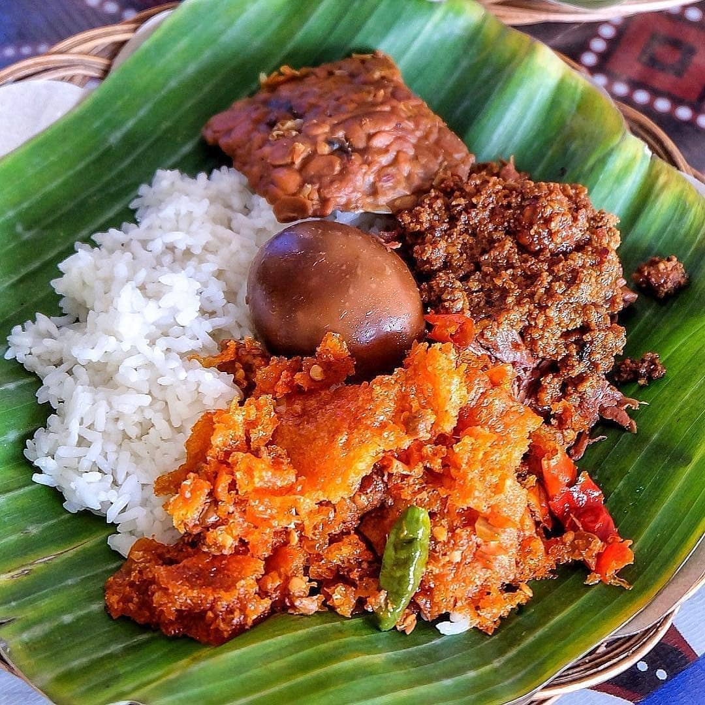

Gudeg Yogyakarta
Masakan ikonik dari Yogyakarta yang terbuat dari nangka muda (gori) yang dimasak lama dengan santan dan gula aren, menghasilkan rasa manis yang khas.

Waktu: 4-5 Jam
Porsi: 8-10 Orang
Tingkat Kesulitan: Mahir
Cara Membuat
- Menata di Panci: Siapkan panci besar (lebih baik panci tanah liat). Alasi dasar panci dengan beberapa lembar daun salam dan daun jati.
- Memasukkan Bahan: Tata potongan nangka muda, ayam/ceker, dan telur rebus di atas alas daun.
- Masukkan Bumbu: Sebarkan bumbu halus, sisa daun salam, lengkuas, dan gula aren di atas nangka.
- Tuang Santan: Tuangkan santan hingga semua bahan terendam. Tambahkan garam secukupnya.
- Proses Memasak: Masak dengan api kecil dan panci tertutup selama 4-5 jam. Jangan diaduk-aduk agar nangka tidak hancur. Cukup cek sesekali agar tidak gosong di dasar.
- Tahap Akhir: Masak terus hingga santan menyusut habis (gudeg kering) atau sisakan sedikit kuah kental (gudeg basah), dan nangka menjadi sangat empuk serta berwarna coklat kemerahan. Koreksi rasa.
- Penyajian: Sajikan gudeg hangat bersama nasi, sambal goreng krecek, dan opor ayam jika suka.